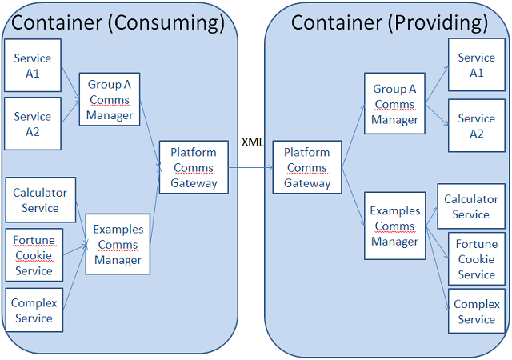

Technical Architecture

The "Platform Comms Gateway" in figure above represents the External Component that Openfire will forward all incoming messages to for processing. The implementation of this feature is deployed as the XC Manager bundle. This bundle is dependent on a configuration file called "xc.properties" that needs to be in the ${VIRGO_HOME}/pickup directory
#Configuration for the the XMPP Server. XCManager reads following config
host=societies.local
# Make sure xcmanager (or XCManager) is spelled the same way as in your
# Openfire configuration. It is case sensitive!
subDomain=xcmanager.societies.local
secretKey=password.societies.local
Having every single Service Bundle registering with the XC Manager does not scale. It is preferable that a Group Manager registers and manages access to each of the end-point services. In the example depicted in Figure 27, the "Examples Comms Manager" component will implement the remote interfaces that allow services to communicate remotely. Also, it will receive requests from remote services which it then will route to the relevant local services.